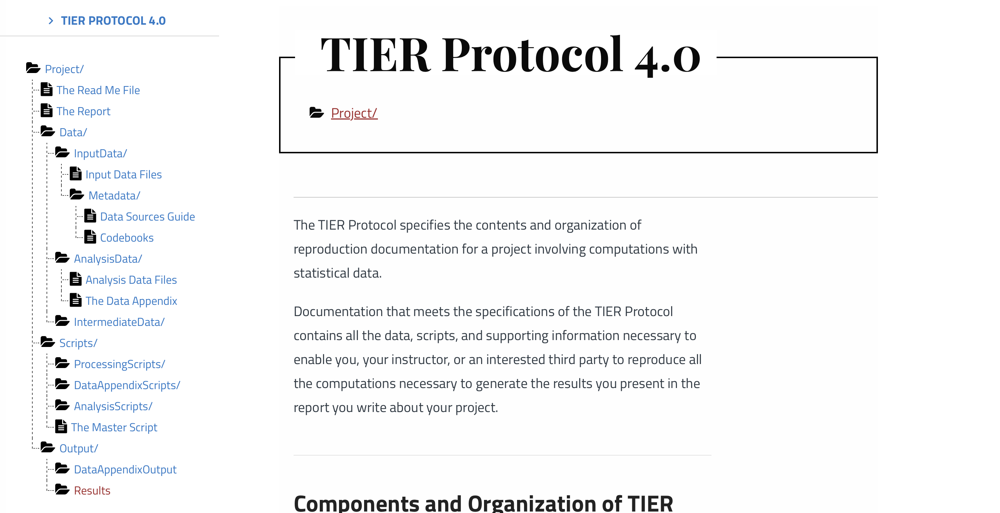

Reproducibility Workshop
![]()
Uni Turin, Collegio Carlo Alberto, SciencesPo Paris, RES Data Editor
30 April, 2025
Agenda
- What is expected from you as an author nowadays?
- 10 simple rules to Reproducibility compiled by the Econ Data Editors.
- The
READMEfile. - Some Reproducibility Best Practices.
- Let’s start a reproducible research project!
What Is Required From Authors? 🫵
What is Required from Authors?
- Most (all?) journals require authors to share code and data.
- Only 17 (!) journals endorse the Data and Code Availability Standard and enforce it via a Data Editor.
What Do We Expect
An advanced graduate student should be able to generate
- All Figures
- All Tables
- All in-text numbers
with your package in the most user-friendly way possible.
A priori, our output should be exactly equal to yours. 😬
10 simple rules to Reproducibility
- Computational Empathy
- Make data accessible
- Cite Data and how to access it
- Describe software and hardware requirements
- Provide all code
- Explain how to reproduce your work
- Provide a table of all things that can be reproduced
- Include all supporting material
- Use a permissible license. Any license is better than none.
- Re-run everything!
The README File
- Plain text top level file which explains everything about your package.
- We have a useful template and a template generator.
- Here are the minimum requirements for a
READMEat The Economic Journal
Best Practices
Best Practices
- Project Organisation (folder structure)
- Code
- Data
- Output
Best Practices
Project Organisation
- Folder Structure is a first order concern for your project.
Minimum Requirement
There should be a separation along:
- Inputs: Data, parameters, etc
- Outputs: Numbers, tables, figures
- Code
- Paper/Report etc
Example?
Best Practices
Good or Bad?
.
├── 20211107ext_2v1.do
├── 20220120ext_2v1.do
├── 20221101wave1.dta
├── james
│ └── NLSY97
│ └── nlsy97_v2.do
├── mary
│ └── NLSY97
│ └── nlsy97.do
├── matlab_fortran
│ ├── graphs
│ ├── sensitivity1
│ │ ├── data.xlsx
│ │ ├── good_version.do
│ │ └── script.m
│ └── sensitivity2
│ ├── models.f90
│ ├── models.mod
│ └── nrtype.f90
├── readme.do
├── scatter1.eps
├── scatter1_1.eps
├── scatter1_2.eps
├── ts.eps
├── wave1.dta
└── wave2.dta
└── wave2regs.dta
└── wave2regs2.dta(scroll down! 😉)
Bad! 👎
- Sub directories are not helpful
- File names are confusing
- code/data/output are not separated
Best Practices
Good 👍
.
├── README.md
├── code
│ ├── R
│ │ ├── 0-install.R
│ │ ├── 1-main.R
│ │ ├── 2-figure2.R
│ │ └── 3-table2.R
│ ├── stata
│ │ ├── 1-main.do
│ │ ├── 2-read_raw.do
│ │ ├── 3-figure1.do
│ │ ├── 4-figure3.do
│ │ └── 5-table1.do
│ └── tex
│ ├── appendix.tex
│ └── main.tex
├── data
│ ├── processed
│ └── raw
└── output
├── plots
└── tablesGood.
- Meaningful sub directories
- top level
README - code/data/output are separated
Best Practices
Example: TIER Protocol structure
Best Practices
Best Project Structure?
Note
There is no unique best way to organize your project: Make it simple, intuitive and helpful.
Important
Ideally your entire project is under version control.
Reproducible Code
Reproducible Code
Question:
How to write reproducible code?
👉 Huge question to answer. Let’s try with a few simple things first:
- Provide a run script which…runs everything. Run it often!
- No copy and paste in your pipeline! Write results to computer’s storage.
- Clear instructions
- Provide a clear way to create the required environment (library installation etc)
Reproducible Code
No Manual Manipulation.
- Change this parameter to 0.4, then run code again 😖
- I computed this number manually 😖😖
Do This!
- Use functions, ado files, programs, macros, subroutines etc
- Use loops and parameters
- Use placeholders for file paths
In general, take all necessary steps to ensure cross-platform compatibility of your code.
file paths are such low-hanging fruit 🍇…
don’t build tables by hand
Reproducible Code
File Paths
👉 Ask the user to set the root of your project, via global variable, environment variable, or other
# in my R, I do
Sys.setenv(PACKAGE_ROOT="/Users/floswald/Downloads/your_package")
# your package uses:
file.path(Sys.getenv("PACKAGE_ROOT"), "data", "wages.csv")# in my stata, I do
global PACKAGE_ROOT "/Users/floswald/Downloads/your_package"
# your package uses
use "$PACKAGE_ROOT/data/wages.dta"Always use forward slashes on Stata /, even on a windows machine!
Reproducible Code
Tables
Reproducible Code
Safe Environments for Running Your Code

No Guarantee
Your code will yield identical results on a different computer only if certain conditions apply.
Protected Environments
👉 You should provide a mechanism which ensures that those conditions do apply.
Reproducible Code 💻
Is Our Daily Bread 🍞
🧪 Reproducibility: Bread Baking vs. Code Execution
| 🍞 Baking Bread (Chemical Experiment) | 💻 Running a Script (Computational Experiment) |
|---|---|
| Ingredients | Dependencies |
| - 500g flour | - Python 3.10 |
| - 300ml water | - numpy==1.24.0 |
| - 7g dry yeast | - pandas==1.5.3 |
| - 10g salt | - scikit-learn (no version specified) |
🧪 Reproducibility: Bread Baking vs. Code Execution
| 🍞 Baking Bread (Chemical Experiment) | 💻 Running a Script (Computational Experiment) |
|---|---|
| Ingredients | Dependencies |
| - 500g flour | - Python 3.10 |
| - 300ml water | - numpy==1.24.0 |
| - 7g dry yeast | - pandas==1.5.3 |
| - 10g salt | - scikit-learn (no version specified) |
| Instructions | Instructions |
| 1. Mix ingredients | 1. Clone the repository from GitHub |
| 2. Knead dough | 2. Create and activate a virtual environment |
| 3. Let rise 1 hour at room temperature | 3. Install dependencies from requirements.txt |
| 4. Bake at 220°C for 30 minutes | 4. Run python train_model.py with default config |
🧪 Reproducibility: Bread Baking vs. Code Execution
| 🍞 Baking Bread (Chemical Experiment) | 💻 Running a Script (Computational Experiment) |
|---|---|
| Ingredients | Dependencies |
| - 500g flour | - Python 3.10 |
| - 300ml water | - numpy==1.24.0 |
| - 7g dry yeast | - pandas==1.5.3 |
| - 10g salt | - scikit-learn (no version specified) |
| Instructions | Instructions |
| 1. Mix ingredients | 1. Clone the repository from GitHub |
| 2. Knead dough | 2. Create and activate a virtual environment |
| 3. Let rise 1 hour at room temperature | 3. Install dependencies from requirements.txt |
| 4. Bake at 220°C for 30 minutes | 4. Run python train_model.py with default config |
| Expected Outcome | Expected Outcome |
| - Well-risen, airy loaf of bread | - Consistent training accuracy and saved model |
⚠️ What Could Possibly Go Wrong?
| 🍞 Bread Baking (Chemical Experiment) | 💻 Running a Script (Computational Experiment) |
|---|---|
| 1. Yeast Inactivation | 1. Library Version Mismatch |
| Water too hot (e.g., 60°C) kills the yeast. No rise. | scikit-learn was updated → train_test_split() behaves differently, causing changes in results. |
⚠️ What Could Possibly Go Wrong?
| 🍞 Bread Baking (Chemical Experiment) | 💻 Running a Script (Computational Experiment) |
|---|---|
| 1. Yeast Inactivation | 1. Library Version Mismatch |
| Water too hot (e.g., 60°C) kills the yeast. No rise. | scikit-learn was updated → train_test_split() behaves differently, causing changes in results. |
| 2. Cold Proofing | 2. Different OS / File System |
| Room too cold (e.g., 15°C) → dough rises too slowly. | Path handling fails on Windows vs. Linux (\ vs. /), or line endings cause script errors. |
⚠️ What Could Possibly Go Wrong?
| 🍞 Bread Baking (Chemical Experiment) | 💻 Running a Script (Computational Experiment) |
|---|---|
| 1. Yeast Inactivation | 1. Library Version Mismatch |
| Water too hot (e.g., 60°C) kills the yeast. No rise. | scikit-learn was updated → train_test_split() behaves differently, causing changes in results. |
| 2. Cold Proofing | 2. Different OS / File System |
| Room too cold (e.g., 15°C) → dough rises too slowly. | Path handling fails on Windows vs. Linux (\ vs. /), or line endings cause script errors. |
| 3. High Altitude Baking | 3. Hardware Differences (e.g., CPU vs. GPU) |
| Lower pressure expands gas too fast; loaf collapses. | Numerical precision differs → inconsistent model outputs. |
⚠️ What Could Possibly Go Wrong?
| 🍞 Bread Baking (Chemical Experiment) | 💻 Running a Script (Computational Experiment) |
|---|---|
| 1. Yeast Inactivation | 1. Library Version Mismatch |
| Water too hot (e.g., 60°C) kills the yeast. No rise. | scikit-learn was updated → train_test_split() behaves differently, causing changes in results. |
| 2. Cold Proofing | 2. Different OS / File System |
| Room too cold (e.g., 15°C) → dough rises too slowly. | Path handling fails on Windows vs. Linux (\ vs. /), or line endings cause script errors. |
| 3. High Altitude Baking | 3. Hardware Differences (e.g., CPU vs. GPU) |
| Lower pressure expands gas too fast; loaf collapses. | Numerical precision differs → inconsistent model outputs. |
| 4. Too Much Salt | 4. Missing or Incorrect Environment Variable |
| Excess salt suppresses yeast → poor fermentation. | DATA_DIR not set → script fails or loads wrong input silently. |
| Result: Flat, dense, or failed bread | Result: Different outputs, errors, or failed experiments |
Reproducible Code
Safe Environments for Running Your Code
At a minimum, your
READMElists the exact computing environment:OS, software and which version used (
R 4.1,stata 17/MP,matlab 2023b,GNU Fortran (Homebrew GCC 13.2.0))Libraries and which exact version used (
ggplot2 1.3.4,outreg 2,numpy 1.26.4,boost 1.8.3)Stata: install all libraries into your replication package.
👉 Virtual Environments can help.
Reproducible Code
Provide a Virtual Environment
julia built-in Pkg manager:
(@v1.10) pkg> activate .
Activating new project at `~/my-project`
(my-project) pkg> add DataFrames GLM
# created 2 files in `~/my-project`
# tracking all dependenciesDocker 🐳 container. This provides a fully specified virtual machine (i.e. a dedicated computer for your project)
Reproducible Code
Stata Virtual Environment
- Include a
version xyzstatement in master script. - User contributed libraries are not versioned.
- You must install all libraries next to your project code. If not,
ssc install somelibwill install an incompatible version a few years later. - Here is a _config.do script forcing stata to use only libraries installed in a given location.
- Excellent guidance by Julian Reif
- We will do this later on!
Reproducible code
Note
Such mechanisms can reduce version conflicts amongst your dependencies. To the extent that all versions of those dependencies are still available, this guarantees a stable computing environment.
Data
Data
- Always keep your raw data intact (i.e. read-only).
- Generate separate analysis datasets to perform analysis.
- Datasets change over time, keep a record of the date and versions you obtained. It might be difficult to obtain it in the future.
What about Confidential Data?
- If we have instructions for direct access, we try (time limit: 30 mins)
- If not, try to get access to authors/data provider’s machine (i.e. their screen)
- If not, data provider may certify results for us.
- If not, must provide simulated version of data.
Output
Output
- Write both tables and figures to local storage (don’t just display on the console!)
- The gold standard: include this table in your readme.
| Output in Paper | Output in Package | Program to execute |
|---|---|---|
| Table 1 | outputs/tables/table1.tex |
code/table1.do |
| Figure 1 | outputs/plots/figure1.pdf |
code/figure1.do |
| Figure 2 | outputs/plots/figure2.pdf |
code/figure2.do |
Output
- keep a full pipeline intact at all times:
run_all() - have a dedicated output folder which you delete frequently
- version output: during revisions, create separate locations for output,
rev1,rev2etc, so you know exactly what version of code made which output.
Break ☕️ 🍰
Hands On Session 💪🏽
10 Steps till Reproducibility
Step 1: Project Setup and Data Acquisition
Create a folder structure:
data,code,output,paperCreate
README.mdat root of this structuredownload example data from zenodo
- save data citation
- copy data into
data/raw - set data to read only
Step 2: Stata Setup
- Create folder
code/stata - Create a
run.dofile - Set up a
config.doas well.
Here is an outline of a potential run.do file:
run.do
- set global variables: paths, full/partial data etc
- call config.do
- tell stata where to look for add-ons
- run analysis- Stata does not crash upon error in nested do-file: must look at
logs.
Step 3: Stata Analysis Code
- Always operate full pipeline via
run.do(can abbreviate) - read, transform, store data
- do analysis proper
- Never build a table by hand!
Step 4: Document Output in README
- Add used software packages to readme
- Add OS and stata version to readme
- Create table in readme indicating where which piece of output can be found
Step 5: Write a Paper!
- Paper should reference objects in
/output/ - Delete
/output/and try to recompile: error. Good! - Regenerate
/output/ - Add total runtime to readme.
Step 6: Add R Code
- Create
/code/R/ - Add
Rscript
Step 7: Incorporate R output in Paper
- Paper should reference objects in
/output/ - Recompile paper
Step 8: Record R package environment
- How to make sure we freeze the R package environment?
- What about upstream dependencies?
- add
renvto/code/R/folder. - Re-run.
Step 9: Add R package citations
- Cite the software packages you used!
- Very easy with
R.
Step 10: Recompile Paper
and submit to a great journal like the EJ! 😉